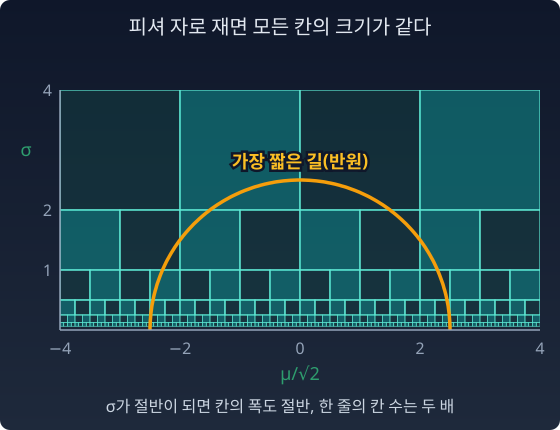

쌍곡 평면: 정규분포들이 사는 땅
피셔 자를 정규분포족에 대면 한 걸음의 길이가 ds² = (dμ² + 2dσ²)/σ² 였다. 이 자가 그리는 땅은 어떤 모양일까? 평면일까, 구면일까, 아니면 그 어느 쪽도 아닐까?
자와 곡률은 다르다
피셔 자로 잰 길이가 같은 걸음들을 (μ, σ) 평면에 모아 그리면 작은 타원이 되고, 그 타원은 σ에 비례해서 아래로 갈수록 작아진다. 이것을 "공간이 아래쪽에서 심하게 휘었다"로 읽고 싶어진다. 그런데 평면에 극좌표를 그리면 바깥쪽 한 칸이 안쪽 한 칸보다 길어도 평면은 평평하다. 타원의 크기가 곳마다 다른 것은 자의 눈금 이야기이고, 곡률은 이 자에서 따로 계산해야 한다.
곡률을 재려면 자 말고 하나가 더 필요하다. 떨어진 두 점의 방향을 견주려면 “옮기는 규칙”, 곧 접속(connection, 무엇을 곧은 길로 볼지 정하는 규칙)이 있어야 한다. 이 절에서는 곧은 길이 곧 가장 짧은 길이 되는 접속, 레비-치비타 접속으로 곡률을 잰다. 계산하면 놀라운 답이 나온다. 타원은 σ에 따라 수십 배로 커지고 작아지는데, 곡률은 모든 점에서 똑같다.
푸앵카레 상반평면
피셔 계량을 정규분포에 적용하면 ds² = (dμ² + 2dσ²)/σ² 였다. μ를 √2로 나눈 좌표 u = μ/√2를 쓰면
괄호 안은 푸앵카레 상반평면의 계량 (du² + dσ²)/σ² 그대로다. 그 계량은 곡률이 −1인 쌍곡 평면(어디서나 말안장처럼 휜 면)이다. 앞의 2배 때문에 거리가 √2배로 늘어나고, 곡률은 1/2배가 된다. 정규분포들의 공간은 곡률이 어디서나 −1/2인 쌍곡 평면이다.
쌍곡 평면에서는:
- σ가 작을수록(아래로 갈수록) 거리가 길어진다.
- 두 점을 잇는 가장 짧은 길(측지선)은 (u, σ) 좌표에서 σ = 0 위에 중심을 둔 반원이다. 원래의 (μ, σ) 좌표로 돌아오면 가로로 √2배 늘어난 반타원이다.
- 평균이 같은 두 분포 사이는 σ 축을 따라 곧게 올라가는 길이 가장 짧다.

그림의 칸들은 피셔 자로 재면 모두 크기가 같다. σ가 절반이 될 때마다 칸의 폭도 절반이 되어, 아래로 내려갈수록 한 줄에 드는 칸이 두 배씩 늘어난다. 에셔의 판화 「원형 극한(Circle Limit)」 연작(1950년대 말)은 같은 쌍곡 평면을 원판 안에 그린 것이다(푸앵카레 원판 모형). 원판 가장자리로 갈수록 물고기가 작게 그려지지만 쌍곡 평면의 자로 재면 모두 같은 크기다. 상반평면에서는 σ = 0 쪽이 그 가장자리다.
“정규분포들의 세계는 에셔가 그린 그 쌍곡 평면이고, 곡률만 절반이다.” 이것은 비유가 아니라 수학적 사실이다.
두 점 사이의 정확한 거리
유한하게 떨어진 두 점 사이의 거리는 √(ΔθᵀIΔθ)가 아니다. 그것은 한 점의 자를 끝까지 그대로 쓴 근사이고, 두 점이 가까울 때만 맞는다. 정확한 피셔–라오 거리는 쌍곡 평면의 거리 공식에서 나온다.
평균이 같으면 d = √2 · |log(σ₂/σ₁)|로 줄어든다. σ를 두 배로 늘리는 것은 어디서 하든 같은 거리, √2 log 2 ≈ 0.980이다. 그리고 이 거리는 대칭이다. KL과 달리 방향이 없다. 리만 거리는 늘 그렇다.
불러오는 중…
파이썬
sympy로 곡률을 계산하고, 세 가지 "거리"를 비교한다.
import numpy as np
import sympy as sp
# (1) 피셔 계량 ds² = (dμ² + 2dσ²)/σ² 의 가우스 곡률 (레비-치비타)
m, s = sp.symbols("mu sigma", positive=True)
E, G = 1 / s**2, 2 / s**2
W = sp.sqrt(2) / s**2 # √(EG)
K = -(sp.diff(sp.diff(G, m) / W, m) + sp.diff(sp.diff(E, s) / W, s)) / (2 * W)
print("K =", sp.simplify(K))
# (2) 두 분포 사이의 세 가지 "거리"
def fisher_rao(m1, s1, m2, s2):
return np.sqrt(2) * np.arccosh(1 + ((m1 - m2)**2 / 2 + (s1 - s2)**2) / (2 * s1 * s2))
def local(m1, s1, m2, s2): # 출발점의 자를 끝까지 그대로 쓴 근사
return np.sqrt((m1 - m2)**2 / s1**2 + 2 * (s1 - s2)**2 / s1**2)
def along_straight(m1, s1, m2, s2, n=200_001): # (μ,σ) 직선을 따라 피셔 자로 잰 길이
t = np.linspace(0, 1, n)
return np.trapezoid(np.sqrt((m2 - m1)**2 + 2 * (s2 - s1)**2) / (s1 + (s2 - s1) * t), t)
# 둘째 쌍: 한국 남성 (174, 5.8)과 네덜란드 남성 (183, 7.1), 어림으로 잡은 키 분포(cm)
for pair in [(0, 1, 0.1, 1), (174, 5.8, 183, 7.1), (-2, 1, 2, 1)]:
print(pair, f"국소근사 {local(*pair):.3f} 직선길이 {along_straight(*pair):.3f} 측지거리 {fisher_rao(*pair):.3f}")
# K = -1/2
# (0, 1, 0.1, 1) 국소근사 0.100 직선길이 0.100 측지거리 0.100
# (174, 5.8, 183, 7.1) 국소근사 1.584 직선길이 1.429 측지거리 1.376
# (-2, 1, 2, 1) 국소근사 4.000 직선길이 4.000 측지거리 3.242
가까운 두 점에서는 셋이 같다. 한국 남성과 네덜란드 남성 사이에서는 국소 근사가 15% 부풀린다. 표준편차 1인 두 분포가 평균 4만큼 떨어진 마지막 경우, 측지선은 σ가 큰 쪽으로 돌아가며 길이를 19% 줄인다. 곧장 옆으로 가는 것보다, 일단 넓어졌다가 옮겨 가서 다시 좁아지는 편이 “분포로서” 더 가깝다.
수확
“피셔 자로 재면 정규분포들의 공간은 곡률이 어디서나 −1/2인 쌍곡 평면이다. 자의 눈금이 곳마다 다른 것과 공간이 휜 것은 다른 이야기다. 떨어진 두 분포의 거리는 한 점의 자로 어림하지 말고 가장 짧은 길을 따라 재야 한다.”
문제 7. 서울에서 샌프란시스코까지, 위도선을 따라갈까
서울과 샌프란시스코는 둘 다 북위 37.7도 근처에 있고, 경도로는 110.6도 떨어져 있다(어림한 값). 지구를 반지름 6371km인 공으로 보자. (가) 북위 37.7도의 위도선을 따라가면 몇 km인가? 위도선의 둘레는 적도 둘레에 cos(위도)를 곱한 것이다. (나) 가장 짧은 길(지구 중심을 지나는 평면이 지구 표면을 자른 큰 원을 따라가는 길)의 거리 d는 cos(d/6371) = sin²φ + cos²φ · cos Δλ로 구한다(φ는 위도, Δλ는 경도 차). 몇 km인가? (다) 가장 짧은 길은 가장 북쪽에서 tan φ최고 = tan φ / cos(Δλ/2)인 위도까지 올라간다. 몇 도인가? 메르카토르 지도에서 위도선은 곧은 가로선인데, 왜 가장 짧은 길은 북쪽으로 불룩한가?
함께 풀기

(가)는 2π × 6371 × cos 37.7° × 110.6/360 = 9,731km예요. 지도에서 곧은 선이니까 이게 가장 짧겠죠. (나)는 확인만 할게요. …9,024km? 700km나 짧아요. 제 계산이 틀렸나 봐요.

두 계산이 모두 맞다면, 어느 쪽 길이 지도 위에서 곧아 보였죠?

위도선이요. 지도에서 곧아 보이는 길이 가장 짧은 길은 아니었네요.

(다)는 tan 37.7° / cos 55.3° = 0.773 / 0.569 = 1.358이라 53.6도예요. 16도 가까이 북쪽으로 올라갔다 내려와요. 그런데 왜 북쪽이죠? 북쪽으로 가면 돌아가는 건데요.
북쪽으로 갈수록 경도 1도의 실제 거리는 어떻게 돼요?

cos(위도)에 비례해서 짧아져요. 북위 53.6도에서는 적도의 0.59배예요. 조금 올라가는 값을 치르면 옆으로 가는 한 도 한 도가 싸져요. 지도는 북쪽의 짧은 거리를 넓게 늘려 그려서 그 길이 돌아가는 것처럼 보이는 거고요.
그래요. 정규분포의 공간에서는 무엇이 옆으로 가는 걸음을 싸게 만들죠?
σ가 커지면 μ 방향 한 칸의 피셔 길이가 1/σ로 줄었어요. 위도가 σ, 경도가 μ인 셈이네요. 캠퍼스 지도에서는 돌아가는 것처럼 보이던 언덕길이 실제로는 도서관까지 더 빨랐던 거랑 같아요.
문제 8. 동전의 자를 곧게 펴기
베르누이 분포(성공 확률 p)의 피셔 정보는 I(p) = 1/(p(1−p))이다. (가) 새 좌표 φ = arcsin√p에서 피셔 정보가 상수 4임을 보여라. (나) p = 0.1과 p = 0.5 사이의 피셔–라오 거리를 구하라.
함께 풀기
(가)는 I(φ) = I(p) · (dφ/dp)²으로 했어요. dφ/dp = 1/(2√(p(1−p)))니까 I(φ) = 1/(4p²(1−p)²). 상수가 아닌데요?
새 좌표에서 한 칸 dφ를 걸으면, 옛 좌표 p로는 몇 칸이에요?

dp/dφ 칸이에요. 민준아, 방향이 반대야. 새 좌표의 한 칸이 옛 좌표로 몇 칸인지, 곧 dp/dφ를 곱해야 해. 문제 5의 J가 ∂θ/∂φ였잖아. (dp/dφ)² = 4p(1−p)니까 I(φ) = 4.
새 걸음을 옛 걸음으로 바꿔서 옛 자로 재는 거니까 dp/dφ구나. 이번엔 한쪽이 아니라 아예 뒤집었네요.
(나)는 자가 상수 4니까 거리가 √4 · |Δφ| = 2|arcsin√0.5 − arcsin√0.1|. 0.927이에요. 적분 ∫ dp/√(p(1−p))를 직접 해도 같아요.
그림으로 보면 더 재밌어요. (√p, √(1−p))는 반지름 1인 원 위의 점이고 φ는 그 각도예요. 동전의 공간은 사분원이고, 피셔 거리는 그 호의 길이의 두 배예요.
그래서 1차원에서는 좌표를 잘 바꾸면 자가 늘 상수가 돼요. 1차원은 곡률이 없어요. 그게 이렇게 보여요.
문제 9. 평평하면서 휜 공간?
(가) N(μ, σ²)의 피셔 계량 ds² = (dμ² + 2dσ²)/σ²의 가우스 곡률이 −1/2임을 보여라. (나) 같은 분포족을 자연모수 θ = (μ/σ², −1/(2σ²))로 쓰자. 자연모수의 직선을 곧은 길로 보는 접속을 e-접속(e = 지수)이라 한다. 접속을 좌표로 적은 수를 크리스토펠 기호 Γ라 하고(모두 0이면 좌표의 직선이 곧은 길), e-접속에서는 Γij,k = E[∂ᵢ∂ⱼℓ · ∂ₖℓ]이다(∂ᵢ는 θᵢ로 미분). 이 값이 모두 0임을 보여라. (다) 두 결과는 모순인가?
함께 풀기
(가)는 앞의 sympy 계산 그대로 −1/2예요.
(나)는 이렇게 했어요. e-접속의 크리스토펠 기호는 E[∂ᵢ∂ⱼℓ · ∂ₖℓ]인데, 지수족에서 log p = θ₁x + θ₂x² − F(θ)라서 ∂ᵢ∂ⱼℓ = −∂ᵢ∂ⱼF예요. x가 없는 상수니까 밖으로 나오고, 남는 E[∂ₖℓ]은 문제 2에서 0이었어요. 그래서 전부 0.

그런데 Γ가 0이면 곡률도 0이잖아요. (가)는 −1/2라면서요. 둘 중 하나는 계산이 틀린 거예요. 제 건 간단하니까 (가)의 sympy가 의심스러워요.
나는 반대로 생각해. 곡률은 좌표와 상관없는 양이라고 했잖아. (μ, σ)에서 −1/2이면 θ 좌표로 가도 −1/2여야 해. 그러니까 θ 좌표에서 Γ가 0이 나온 (나)가 틀렸어.
둘 다 "곡률"이라고 했는데, (가)의 곡률은 어느 접속의 곡률이에요?
(가)는 계량만 넣고 계산했으니까… 레비-치비타 접속이요.
(나)는요?

e-접속이요. 다른 접속이에요. 곡률이 좌표에 무관한 건 맞지만, 접속을 바꾸면 곡률이 바뀌어요. 같은 공간, 같은 자 위에 서로 다른 두 "곧음"을 얹은 거예요. 모순이 아니에요.
그럼 θ 좌표에서 레비-치비타의 Γ를 구하면 0이 아니어야겠네요. 돌려 볼게요. Γ¹₁₂ = −(θ₁² + θ₂)/(2θ₂²). 0이 아니에요. 그리고 그 Γ로 곡률을 내면 θ 좌표에서도 −1/2이 나와요.
같은 좌표계 안에서 두 접속을 나란히 놓으니까 보이네요. 제 Γ = 0은 틀린 게 아니라 다른 질문의 답이었어요.
한 줄로 말하면, 곡률은 (공간, 접속) 쌍의 성질이에요. 정규분포족은 e-접속으로 평평하고, m-접속(충분통계량의 평균인 기대모수 η의 직선을 곧은 길로 보는 접속, m = 혼합)으로도 평평하고, 레비-치비타로는 −1/2로 휘었어요.
같은 코드를 채점해도 조교가 "스타일 기준"으로 보면 만점이고 "성능 기준"으로 보면 감점인 거랑 비슷하네요. 코드는 하나인데 기준이 바뀌면 점수가 바뀌는.
문제 10. 좁은 두 분포 사이의 가장 짧은 길 (킬러)
두 정규분포 N(−2, 0.5²)과 N(2, 0.5²)가 있다. (가) 두 분포 사이의 피셔–라오 거리를 구하라. (나) (μ, σ) 평면에서 측지선을 그려라. 가장 높이 올라가는 σ는 얼마인가? (다) √(ΔθᵀIΔθ)로 잰 값과, (μ, σ)에서 그린 반원을 따라 잰 길이는 각각 얼마이고, 왜 (가)와 다른가?
함께 풀기
(가)는 공식에 넣으면 돼요. √2 · arccosh(1 + (16/2)/(2 × 0.25)) = √2 · arccosh 17 = 4.986. 위젯의 처음 배치가 이 두 분포라서 거기서도 맞춰 봤어요. (다)의 국소 근사는 Δμ = 4, Δσ = 0, I = diag(1/0.25, 2/0.25)니까 √(16 × 4) = 8인데, 멀리 떨어진 두 점이라 그냥 틀린 값이죠.
(나)는 가장 짧은 길이 쌍곡 평면에서 반원이니까, (μ, σ) 평면에 μ = 0을 중심으로 두 점을 지나는 반원을 그리면 돼. 반지름이 √(2² + 0.5²) = 2.06이니까 가장 높은 σ도 2.06이야. 그 위에서 피셔 길이를 적분하면… 5.163이고.
민준 학생, 8은 틀린 값이라고 했는데, 어떤 길의 길이도 아니에요?
근사니까 길이는 아니지 않나요… 출발점의 자를 끝까지 들고 간 값이니까요.
σ = 0.5인 가로 직선을 따라가면 자가 어디서나 같아요. 그 직선의 피셔 길이는요?

계속 σ = 0.5니까 자가 안 변해서… 정확히 8이에요. 제 "국소 근사"는 틀린 값이 아니라 가로 직선을 따라 정확히 잰 길이였네요. 가장 짧은 길이 아닐 뿐이고요.
그럼 서연 학생의 반원은 가장 짧은 길이에요? 민준 학생의 4.986과 견줘 봐요.

5.163이 4.986보다 길어요. 쌍곡 평면의 측지선은 반원인데요. …아닌가요? 앞의 쌍곡 평면 설명을 다시 볼게요. 반원인 건 (u, σ) 좌표, u = μ/√2에서예요. 저는 (μ, σ)에서 반원을 그렸어요.
다시 할게요. u로 바꾸면 두 점이 u = ±√2, σ = 0.5. 중심은 u = 0이고 반지름은 √(2 + 0.25) = 1.5. 가장 높은 σ는 1.5예요. (μ, σ)로 돌아오면 가로 반지름이 1.5 × √2 = 2.12, 세로 반지름이 1.5인 반타원이에요.
그 반타원을 따라 수치 적분하면 공식과 같은 4.986이 나와요.
그래서 제 반원 5.163은 가장 짧은 길보다 3.6% 길어요. 반원 모양이라는 결론은 맞았는데, 그 반원이 사는 좌표를 놓쳤어요. 계량 앞의 2를 무시하고 푸앵카레 평면이라고 불렀던 거예요.

그리고 제 8은 가장 짧은 길보다 60%나 길어요. 좁은 두 분포는 옆으로 곧장 가는 것보다, σ = 1.5까지 넓어졌다가 건너가서 다시 좁아지는 게 훨씬 가까워요. 두 분포가 거의 안 겹치는데, 중간에 넓은 분포들을 거치면 한 걸음 한 걸음이 싸져요.
(다)의 "왜"를 한 줄로 정리해 봐요.
√(ΔθᵀIΔθ)는 한 점의 자를 끝까지 들고 간 근사라서 두 점이 가까울 때만 맞아요. 반원은 μ를 √2로 나누는 것을 빠뜨려서 측지선이 아니었어요. 정확한 답은 (u, σ)의 반원, 곧 (μ, σ)의 반타원을 따라 잰 4.986이에요.
서울에서 부산 갈 때 서울 시내 지도의 축척을 끝까지 쓰면 안 되는 거랑 같네요. 동네 축척은 동네에서만 맞아요.

오늘 두 사람의 실수가 이 장의 두 교훈이에요. 민준 학생은 자가 위치마다 다르다는 것, 그래서 유한한 거리는 길을 따라 적분해야 한다는 것을 봤어요. 서연 학생은 가장 짧은 길의 모양이 어느 좌표에서 그리느냐에 따라 달라 보인다는 것을 봤고요. 반원이든 반타원이든 같은 길이에요. 길이는 좌표를 바꿔도 4.986이고요.